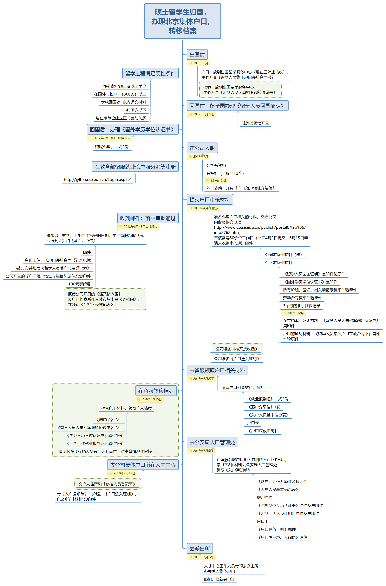
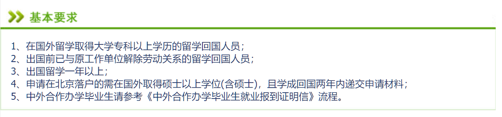
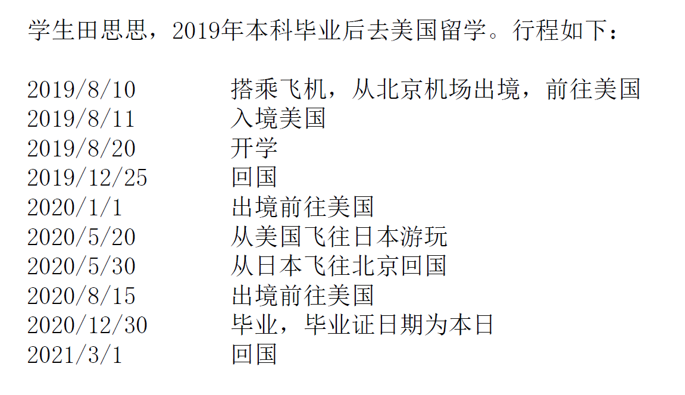
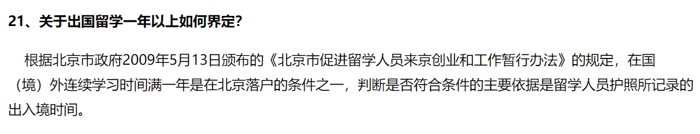
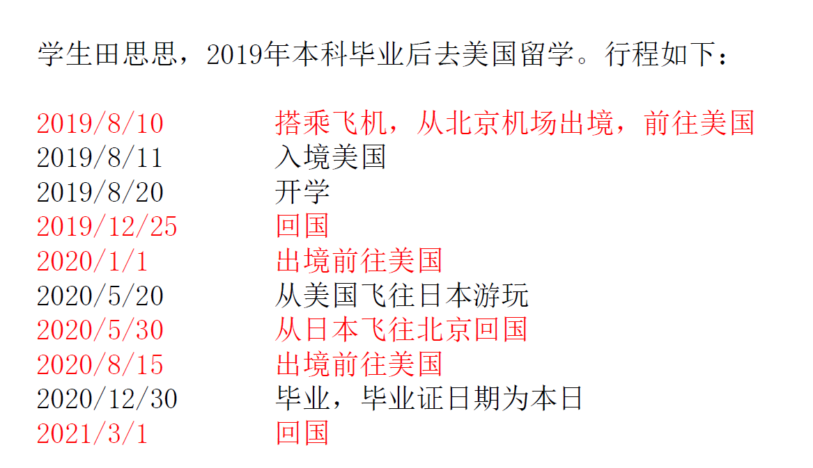
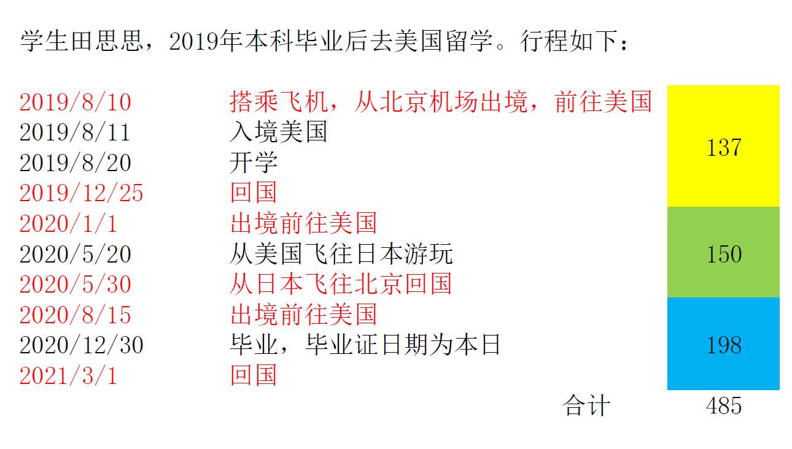

经验分享
Share my experience and hopefully helping others
记录留学生落户北京全过程，并贡献时间节点和所需材料
出国前就了解过北京落户相关的政策，一句话概括就是在国外修读硕士或博士的学生，回国两年之内可以落北京户口。 据说在2015年之后，一个北京户口的“黑市价”可能达到20到30万。虽然也想不通为什么这么贵（以及黑市是哪儿来的）， 但符合条件即可申请落户，那如果有机会还是要申请一下的。这里我简单记录下我作为留学生通过教育部留学服务中心落户的全过程， 为大家提供一些小小的经验。在文后还有一些对于户口的思考。
此篇文章主要面向在京的大学生，准备出国读研/读博，并有意在回国后将户口迁移至北京。本科不在京的同学，也可以参考下。
我会在文后附上一个check list，过一遍这个检查清单，来看你能否过五关斩六将，将户口收入囊下。
下图是总流程图，配合文字食用效果更佳。 
首先向同学们介绍一个网站，教育部留学服务中心，简称“留服”，http://www.cscse.edu.cn/publish/portal0/tab38/default.htm。
这个网站是留服的官方网站，是最具权威性的网站。发布的内容也都比较重要。
网上大家的经验分享帖比较多，可能有些地方众说纷纭，但是以后遇到一切问题、冲突，都以这个网站为准。
网站上面导航栏中有“留学回国”--“就业落户”，http://www.cscse.edu.cn/publish/portal0/tab89/default.htm，关注这个板块哦。
“就业落户”页面下“在京就业落户”中，“常见问题”也是值得学习的。当然，我也会在后面的文字中引用这些内容。
1. 出国前
拿到Offer了吗？准备买机票租房子打包行囊了吗？在这之前，别忘了将你的户口和档案找个妥善的地方保管。
1.1 户口
目前，留服已经停止接受留学人员在行前存放集体户口。我是最后一批存放户口的人员，所以没有大学毕业时将户口迁回原籍的经历。
不过可以提醒大家的是，最好在出国前，由本人办理迁移户口的所有手续，并保存好一！切！资！料！
日后办理落户时有很多流程需要之前的资料，如果找不到了会很麻烦。
1.2 档案
档案的话，根据留服网站，目前留服还是接收的。之前有学妹问我，临毕业出国了，档案是跟着户口一起回老家好还是放在留服好。
在这里，我的回答是，如果你毕业后准备回国且回国后期望通过留服落户而留到北京，建议你将档案放在留服，因为迁移时流程还比较复杂，
弄不好档案在外地让你多跑一趟，就得不偿失了。如果你毕业后不准备回国或准备去上广深杭等城市发展，那档案还是跟户口一起吧，
日后办手续时不用跑回北京。
2. 留学中及毕业后
2.1 硬性条件
在国外是不是很爽呢！在放飞自我的时候，千万要牢记留服这几个基本要求
（http://www.cscse.edu.cn/publish/portal0/tab89/default.htm）：

一条一条和大家解释：
1、在国外留学取得大学专科以上学历的留学回国人员：
后面第4条说了，北京落户需要硕士及硕士以上学位
2、出国前已与原工作单位解除劳动关系的留学回国人员：
没有劳动关系，纯脱产，一般学生都符合
3、出国留学一年以上：
这条最严格，卡掉的人数也最多，展开说。留服要求你“学习期间停留境外的时间”必须超过365天。
这个时间是按照你的出入留学国境日期和开学时间来计算。举个详细的例子来说，

如何计算“出国留学时间”呢？请见“常见问题”第21条，

“判断是否符合条件的主要依据是留学人员护照所记录的出入境时间。”
我曾就计算时间的问题浏览了很多帖子，也发邮件问过了审核人员，计算方式如下：
依据护照所记录的出入境时间：所以无论你的飞机是否跨昼夜，留服只看你的出境时间，
所以计算日期时只采纳8/10这一数据，不参考8/11。
同样，在美国学期结束后飞到日本玩耍，因为没有入境中国，所以完全不计算。所以入境时间为5/30。
毕业后，只要你没有回国，则也计算入留学时间。
这就是整理后的行程，以此来计算时间。

然后计算时间。留服计算时间的方式很简单，就是（入境日期）-（出境日期）。
例如，1月1日出境，1月3日入境，在外的时间就是（3）-（1）=2日。有一些在香港澳门留学的朋友，当日往返，也不会扣除。
所以In this case，小田同学的留学时间为485天，累加满足了一年（365天）的要求。
请注意，网站上的第21条原文为“在国（境）外连续学习时间满一年是在北京落户的条件之一”，但是请不要纠结于“连续”两字。
我曾被自己脑补吓到不行，以为最少也要有一段连续365天在国外的经历，但事实证明，这两个字应该是“累加”更合适一些。

4、申请在北京落户的需在国外取得硕士以上学位(含硕士)，且学成回国两年内递交申请材料：
学成回国的日期为你毕业后的第一次入境中国的日期。小田同学的学成回国日期就为2021年3月1日，需要单位在2023年3月1日前递交材料。
5、中外合作办学毕业生请参考《中外合作办学毕业生就业报到证明信》流程：
我没办过，不清楚。
当然了，还有一些其他的硬性要求，例如：
6、年龄在45周岁以下；
7、单位可办理落户手续！
其他的要求都是对个人的要求。请务必在入职前和HR确认，是否有本年度或下一年度的落户名额。
一般为年后（三四月份），单位HR提交材料完成年度的备案，留服发放指标。对于一般（规模中小）企业来说，一般为每年有2个指标。
假如你是5.6.7月份或以后回国，你可以使用三年的指标，当年、次年、后年的指标，因为后年的指标是4月份批复的，你在5月以后回国还可以赶得上“两年之内”。
假如是5月之前回国，你就要在当年或者次年完成申请，否则就错过了两年之限，此路不通了。
请关注留服网站，例如现在（2019年5月）就公示了2019年4月止的单位名单，http://www.cscse.edu.cn/publish/portal0/tab89/info15479.htm
请查看网站上是否有你将要入职的单位，因为如果入了职才发现单位没有资质，那么会很麻烦——除非你能Push行政人事Team让他们完成备案。
2.2 你要做的事儿
如果你满足了硬性指标，恭喜你，这是开始办理落户的第一步。你要做的事，在毕业后，向所在国使领馆申请开具《留学人员回国证明》。
根据经验，这个《证明》需要一定时间，因为使领馆也要核实你的身份状态嘛。最好还是毕业后停留一段时间，等手续办完后再回国。
有的同学比较归心似箭，但这个《证明》是必须中国驻留学国的使领馆开具的，
这种情况需要你自行或寻求同学帮助，将材料寄到使领馆，开好的《证明》寄回国内。
3. 回国后
回国后的第一件事是什么？回家团聚？吃顿好的？这些都很重要，不过在本文中，我的答案是：先去留服办理《国外学位学历认证书》。
你的毕业证可能是英文，可能是法文，听说比格高的学校用的是拉丁文，这拿到哪个办事机构人家也看不懂啊！《认证书》的作用，就是认证你的学位学历，
以后在国内，这就是你的毕业证了。我是2017年办理，一式两份，现在好像是电子化了。不管是什么形态，先把这个办了再说，原因一样——认证需要时间，
而你很多的步骤都需要这个东西。现办会拖延进度的。所以，办这个要抓紧哦。
4. 入职
入职的话，像前文所说，确认两点：公司有留服发放的指标，你有公司的指标。签订劳动合同的公司一定是以后申请落户的公司，名称必须一致。
另外还有一个需要注意的地方，
公司需要能够开具或协助开具《户口落户地址介绍信》。这个问HR，办过的HR都会给你解答。（据说）北京的落户在收紧，有些集体户口本只许出不许进。
如果没有《落户地址介绍信》，听说还要找 中介来办，比较麻烦。